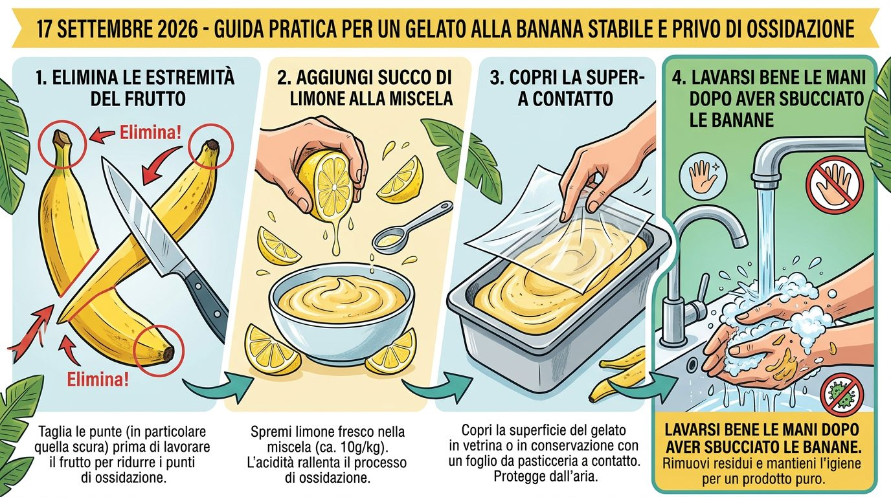
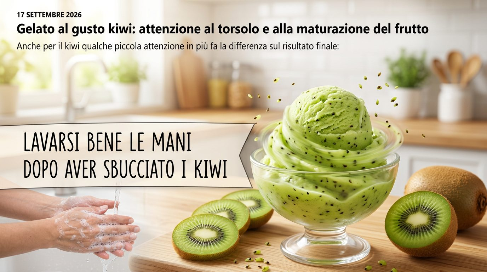
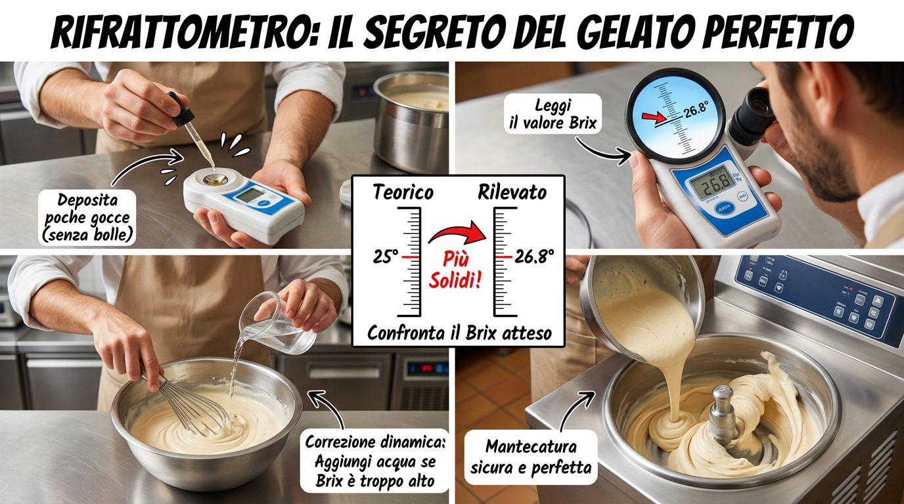

← Zurück zum Produktvergleich
📰 Neuigkeiten
17. September 2026
Bananeneis (Wasserbasis): So bremst du die Oxidation

Ein paar praktische Kniffe für ein Bananeneis, das Farbe und Geschmack länger hält:
- Entferne beide Enden der Frucht vor der Verarbeitung, besonders die Spitze mit dem dunklen Punkt: das ist einer der Bereiche, die am meisten zur Oxidation des Eises beitragen.
- Gib der Mischung Zitronensaft zu, in ausreichender Menge — etwa 10 g pro kg Mischung: die Säure lässt das Eis langsamer oxidieren.
- Decke die Oberfläche des Eises ab, in der Vitrine oder bei der Lagerung, mit einer leichten Konditorei-Folie in direktem Kontakt: das begrenzt die durch Luftkontakt verursachte Oxidation zusätzlich.
17. September 2026
Kiwieis: auf den Kern und den Reifegrad der Frucht achten

Auch bei der Kiwi macht ein wenig zusätzliche Aufmerksamkeit einen Unterschied im Ergebnis:
- Entferne die Enden der frischen Frucht, besonders den mittleren Teil mit dem Kern: er trägt zu einer leicht bitteren Geschmacksnote bei.
- Vermeide zu reife Kiwis: sie begünstigen nicht nur die Oxidation des Produkts, sondern können auch einen leichten Geruch nach verdorbenem Fisch abgeben — dasselbe kann bei tiefgefrorenen Kiwis passieren, die nicht sofort nach dem Auftauen verwendet werden.
- Decke das Eis mit einer leichten Konditorei-Folie ab, um es während der Lagerung zu schützen — wie beim Bananeneis.
12. September 2026
Hygiene im Labor: kleine, kostengünstige Maßnahmen gegen unnötige Bakterien
Man braucht nicht immer teure Profi-Ausrüstung, um die Hygiene an Theke und im Labor unter Kontrolle zu halten: einige preiswerte Hilfsmittel, die man in jedem Baumarkt (Bauhaus, Hornbach, OBI) oder Bastelladen findet, machen einen echten Unterschied dabei, Stellen zu reduzieren, an denen sich Bakterien festsetzen können.
- Bürsten und Reinigungsbürstchen aus lebensmittelechtem Silikon: anders als Schwämme halten sie zwischen den Borsten keine Feuchtigkeit oder organischen Rückstände zurück und lassen sich leichter desinfizieren — praktisch zum Reinigen der Ecken von Gefriermaschinen, Auslaufhähnen und Düsen, wo sich Mischungsreste ansammeln.
- Mikrofasertücher, farblich nach Bereich getrennt: eine Farbe für die Vitrine, eine für die Arbeitsflächen, eine für den Boden — so vermeidet man versehentlich, Verschmutzung von einer "unsauberen" Zone in eine Zone mit direktem Produktkontakt zu übertragen — ein System, das in vielen Profiküchen verwendet wird und nur wenige Euro kostet.
- Eine eigene Sprühflasche für das Desinfektionsmittel, beschriftet und nie für andere Flüssigkeiten wiederverwendet: sie garantiert eine konstante Verdünnung des Produkts statt "nach Augenmaß", und verhindert, dass sich Spuren verschiedener Reinigungsmittel mischen.
- Teststreifen zur Kontrolle der Desinfektionsmittelkonzentration (dieselben, die für Schwimmbäder oder Trinkwasser verwendet werden): wenige Cent pro Stück, ermöglichen sie zu prüfen, ob die Lösung wirklich wirksam und nicht zu stark verdünnt für den täglichen Gebrauch ist.
- Rutschfeste, wasserdurchlässige Matten vor Gefriermaschine und Abfüllstation: sie verhindern nicht nur Stürze, sondern auch stehendes Wasser auf dem Boden — eine feuchte, warme Umgebung begünstigt die Bakterienvermehrung besonders stark.
- Druckluftspray zum schnellen Trocknen von Düsen, Ventilen und schwer erreichbaren, zerlegbaren Teilen: Restfeuchte an versteckten Stellen ist oft die Ursache für scheinbar unerklärliche Gerüche und Verunreinigungen.
- Spatel und Utensilien aus Silikon oder lebensmittelechtem Kunststoff statt Holz: Holz ist porös und hält auch nach dem Waschen Feuchtigkeit und Rückstände zurück, während Silikon und Kunststoff sich gründlich desinfizieren lassen und sich optisch leichter auf Schäden prüfen lassen.
Keines dieser Hilfsmittel ersetzt einen strukturierten Hygieneplan (HACCP), aber eine Investition von wenigen Dutzend Euro in die richtigen Werkzeuge verringert deutlich die Fälle, in denen Verunreinigung aus einem übersehenen praktischen Detail entsteht, nicht aus echter Nachlässigkeit.
12. September 2026
Refraktometer im Labor: wie man den Zuckergehalt vor dem Gefrieren korrigiert

Das Refraktometer ist eines der nützlichsten — und am wenigsten genutzten — Werkzeuge in handwerklichen Laboren. Es misst den °Brix-Wert der Mischung, also den Prozentsatz der gelösten Feststoffe (in der Praxis fast immer Zucker) in der Flüssigkeit: ein Wert, der zeigt, ob das Rezept wirklich so ausbalanciert ist, wie es auf dem Papier berechnet wurde.
Warum man vor dem Gefrieren prüfen sollte, und nicht nur nach der Pasteurisierung: zwischen der Zubereitung der Mischung und dem Moment des Gefrierens können sich mehrere Dinge ändern — Verdunstung während der Pasteurisierung, Zugabe von frischem Obst oder Pürees mit einem von Chargeur zu Charge unterschiedlichen Zuckergehalt, "nach Gefühl" vorgenommene Korrekturen während der Reifung. Eine Refraktometer-Messung kurz vor dem Gefrieren erfasst diese Abweichungen, solange noch Zeit ist, sie zu korrigieren, statt sie erst beim Verkosten des fertigen Eises zu entdecken.
So wird es in der Praxis verwendet:
- Reinige das Prisma vor und nach jeder Messung sorgfältig: selbst ein minimaler Rückstand verändert den Wert.
- Gib wenige Tropfen der gut durchmischten Masse ohne Luftblasen auf das Prisma.
- Falls das Refraktometer keine automatische Temperaturkompensation (ATC) hat, lies den Wert bei der vom Hersteller angegebenen Temperatur ab (meist 20 °C) oder wende die manuelle Korrektur an — eine wärmere oder kältere Mischung verfälscht die Messung.
- Vergleiche den gemessenen Wert mit dem für dein Rezept erwarteten °Brix-Wert (dasselbe Prinzip, das im Sorbet-Rezeptrechner dieser Seite zur Schätzung des theoretischen Brix-Werts verwendet wird).
So korrigiert man die Abweichung:
- Brix-Wert niedriger als erwartet (Mischung zu verdünnt oder Obst weniger süß als sonst): füge in kleinen Mengen Zucker, Dextrose oder Glukosesirup hinzu, mische erneut durch und miss neu, bis du dich dem Zielwert näherst.
- Brix-Wert höher als erwartet (sehr reifes Obst, übermäßige Verdunstung bei der Pasteurisierung): korrigiere mit Wasser oder einer kleinen Zugabe neutraler Basis, wobei nach jeder Korrektur erneut gemessen wird.
- Gehe in kleinen Schritten vor: es ist leichter, den Brix-Wert mit einer weiteren Zugabe leicht anzuheben, als eine korrekte Mischung mit bereits zu viel gelöstem Zucker zu verwässern.
Diese Kontrolle ist besonders nützlich bei Sorbets und Fruchteis, wo der natürliche Zuckergehalt je nach Saison und Reifegrad schwankt — deutlich weniger bei standardisierten industriellen Basen und Pasten, wo die Chargenschwankung minimal ist.
3. September 2026
Neuer Leitfaden zu PAC-Wert, POD-Wert und Trockenmasse
Wir haben einen vollständigen Leitfaden zu den drei wichtigsten Parametern für die Ausbalancierung eines Eisrezepts veröffentlicht: PAC-Wert (Gefrierpunkterniedrigung), POD-Wert (Süßkraft) und Trockenmasse. Der Leitfaden erklärt, was diese Werte messen, warum sie wichtig sind und wie man sie in der Praxis nutzt, wenn man verschiedene Basen und Zutaten vergleicht.
Vollständigen Leitfaden lesen →
Aktuelle Updates
Neue Produkte im Archiv
Wir erweitern das Archiv laufend um neue Produkte — Basen, Pasten, Glasuren und Halbfertigprodukte verschiedener Hersteller — sowie um ein neues Formular, mit dem man die kostenlose Optimierung des eigenen Rezepts anfragen kann, ausgehend von der bereits verwendeten Basis.
Zum Formular "Wir optimieren dein Rezept kostenlos" →